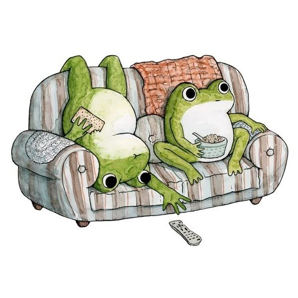

На цьому сайті ви дізнаєтесь про різні види жаб, їхні особливості, середовище проживання та цікаві факти. А також знайдете милі фото.
Маленькі жабки справжні чарівники, що живуть у світі води та зелені. Їхня ніжна шкіра, мов смарагд, переливається на сонці. З великими, виразними очима вони спостерігають за світом, що їх оточує. Кожен стрибок — це маленький танець, повний грації та легкості. Їхнє ніжне кумкання звучить як колискова для природи, наповнюючи вечірні сутінки чарівною мелодією. Вони — справжні господарі боліт і ставків, зберігачі спокою і тиші. У світі, де все поспішає, жабки нагадують нам про важливість насолоджуватися моментом. Ці дивовижні створіння роблять наш світ трохи добрішим і спокійнішим.